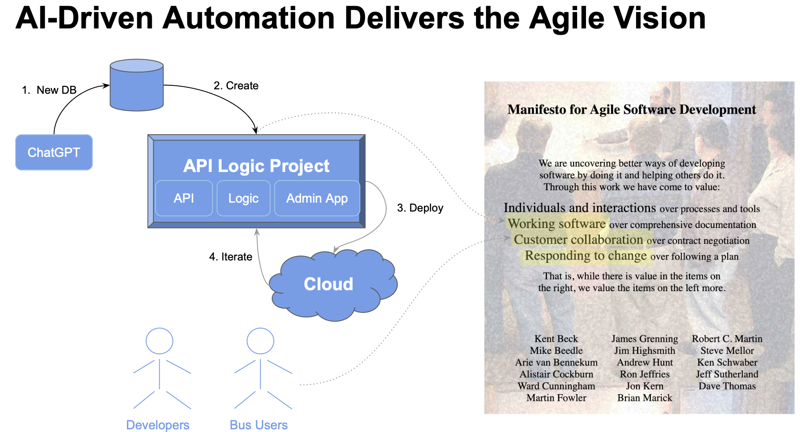
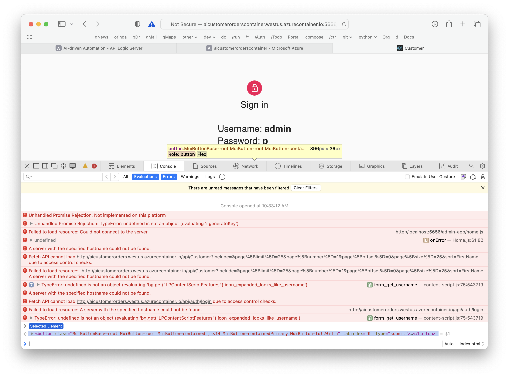

AI-driven Auto sqlite
Under Construction - Preview
 TL;DR - Working Software, Now
TL;DR - Working Software, Now
Agile correctly advises getting Working Software as fast as possible, to facilitate Business User Collaboration and Iteration. Using AI and API Logic Server helps you achieve this:
-
Create Database With ChatGPT
-
Create Working Software Now with API Logic Server: creates an API, and Admin screens from your database
-
Deploy for Collaboration with API Logic Server: automated cloud deployment enables collaboration:
- Engage Business Users with running Admin screens - spot data model misunderstandings, and uncover logic requirements
- Unblock UI Developers with the API
-
Declarative Logic Automates Iteration: use declarative rules for logic and security, extensible with Python as required. Rules are a unique aspect of API Logic Server:
- logic is 40X more concise, and
- automatically ordered per system-discovered dependencies, to facilite rapid iteration
With API Logic Server, if you have a database, you can create and deploy for collaboration within hours.

1. ChatGPT Database Generation
Obtain the sql
Use ChapGPT to generate SQL commands for database creation:
Create database definitions from ChatGPT
Create a sqlite database for customers, orders, items and product, with autonum keys.
Create a few rows of customer and product data.
Maintain the customer's balance as the sum of the unshipped orders amountotal, and ensure it does not exceed the credit limit. Derive items price from the product unit price.
Copy the generated SQL commands into a file, say, ai_customer_orders.sql:
CREATE TABLE IF NOT EXISTS Customers (
CustomerID INTEGER PRIMARY KEY AUTOINCREMENT,
FirstName TEXT,
LastName TEXT,
Email TEXT,
CreditLimit REAL,
Balance REAL DEFAULT 0.0
);
CREATE TABLE IF NOT EXISTS Products (
ProductID INTEGER PRIMARY KEY AUTOINCREMENT,
ProductName TEXT,
UnitPrice REAL
);
CREATE TABLE IF NOT EXISTS Orders (
OrderID INTEGER PRIMARY KEY AUTOINCREMENT,
CustomerID INTEGER,
OrderDate DATE,
ShipDate DATE,
FOREIGN KEY (CustomerID) REFERENCES Customers(CustomerID)
);
CREATE TABLE IF NOT EXISTS OrderItems (
OrderItemID INTEGER PRIMARY KEY AUTOINCREMENT,
OrderID INTEGER,
ProductID INTEGER,
Quantity INTEGER,
ItemPrice REAL,
FOREIGN KEY (OrderID) REFERENCES Orders(OrderID),
FOREIGN KEY (ProductID) REFERENCES Products(ProductID)
);
-- Insert customer data
INSERT INTO Customers (FirstName, LastName, Email, CreditLimit) VALUES
('John', 'Doe', 'john@example.com', 1000.00),
('Jane', 'Smith', 'jane@example.com', 1500.00);
-- Insert product data
INSERT INTO Products (ProductName, UnitPrice) VALUES
('Product A', 10.00),
('Product B', 15.00),
('Product C', 8.50);
Create the database
Sqlite is already installed in ApiLogicServer, so we avoid database installs by using it as our target database:
sqlite3 ai_customer_orders.sqlite < ai_customer_orders.sql
Note: if you use the names above, you can save time by using the docker image and git project that we've already created.
2. Create Working Software
Given a database, API Logic Server can create an executable, customizable project:
ApiLogicServer create --project_name=ai_customer_orders --db_url=sqlite:///ai_customer_orders.sqlite
This creates a project you can open with VSCode. Establish your venv, and run it via the first pre-built Run Configuration. To establish your venv:
python -m venv venv; venv\Scripts\activate # win
python3 -m venv venv; . venv/bin/activate # mac/linux
pip install -r requirements.txt
3. Deploy for Collaboration
API Logic Server also creates scripts for deployment, as shown below:
Add Security
In a terminal window for your project:
ApiLogicServer add-auth
Create the image
In a terminal window for your project:
sh devops/docker-image/build_image.sh .
Test
You can test the image in single container mode: sh devops/docker-image/run_image.sh.
You can also test the image with docker compose: sh ./devops/docker-compose-dev-local/docker-compose.sh.
Upload Image (optional)
You would next upload the image to docker hub.
If you use the same names as here, skip that, and use our image:
apilogicserver/aicustomerorders.
Push the project
It's also a good time to push your project to git. Again, if you've used the same names as here, you can use our project.
Deploy to Azure
Note: This currently fails, and is under investigation. See the Appendix below for more information.
Then, login to the azure portal, and:
git clone https://github.com/ApiLogicServer/ai_customer_orders.git
cd ai_customer_orders
sh devops/docker-compose-dev-azure/azure-deploy.sh
4. Iterate with Logic
Logic Design ('Cocktail Napkin Design')
Customer.Balance <= CreditLimit
Customer.Balance = Sum(Order.AmountTotal where unshipped)
Order.AmountTotal = Sum(OrderDetail.Amount)
OrderDetail.Amount = Quantity * UnitPrice
OrderDetail.UnitPrice = copy from Product
Rules are an executable design. Use your IDE (code completion, etc), to replace 280 lines for code with these 5 rules:
Rule.constraint(validate=models.Customer, # logic design translates directly into rules
as_condition=lambda row: row.Balance <= row.CreditLimit,
error_msg="balance ({round(row.Balance, 2)}) exceeds credit ({round(row.CreditLimit, 2)})")
Rule.sum(derive=models.Customer.Balance, # adjust iff AmountTotal or ShippedDate or CustomerID changes
as_sum_of=models.Order.AmountTotal,
where=lambda row: row.ShipDate is None) # adjusts - *not* a sql select sum...
Rule.sum(derive=models.Order.AmountTotal, # adjust iff Amount or OrderID changes
as_sum_of=models.OrderItem.Amount)
Rule.formula(derive=models.OrderItem.Amount, # compute price * qty
as_expression=lambda row: row.ItemPrice * row.Quantity)
Rule.copy(derive=models.OrderItem.ItemPrice, # get Product Price (e,g., on insert, or ProductId change)
from_parent=models.Product.UnitPrice)
Appendix
Azure Deployment
Following the first 2 steps above, I have created the git project and docker image note above.
Key facts about the application:
-
It uses flask and sqlite. sqlite is an embedded database, so should not require a separate image. However, azure refused to start a docker compose with just 1 service.
-
The sqlite database file is in
database/db.sqlite -
The generated docker compose moves this to
home/api_logic_project/database/db.sqlite -
You can run the container locally with:
docker run -it --name api_logic_project --rm --net dev-network -p 5656:5656 -p 5002:5002 apilogicserver/aicustomerorders
Multi-Container
Then, login to the Azure portal, and:
tl;dr:
git clone https://github.com/ApiLogicServer/ai_customer_orders.git
cd ai_customer_orders
sh devops/docker-compose-dev-azure/azure-deploy.sh # a docker compose
That has failed inconsistently; sometimes with 500 errors, sometimes with complaints about the docker compose.
Single-Container
So, I tried just a single container:
az container create --resource-group aicustomerorders_rg --name aicustomerorderscontainer --image apilogicserver/aicustomerorders:latest --dns-name-label aicustomerorderscontainer.io --ports 5656 --environment-variables 'APILOGICPROJECT_VERBOSE'='True' 'APILOGICPROJECT_CLIENT_URI'='//aicustomerorders.westus.azurecontainer.io'
9/22:
az group create --name aicustomerorders_rg --location "westus"
az appservice plan create --name myAppServicePlan --resource-group aicustomerorders_rg --sku S1 --is-linux
az container create --resource-group aicustomerorders_rg --name aicustomerorders --image apilogicserver/aicustomerorders:latest --dns-name-label aicustomerorders --ports 5656 --environment-variables VERBOSE=True APILOGICPROJECT_CLIENT_URI=//aicustomerorders.westus.azurecontainer.io:5656
http://aicustomerorders.westus.azurecontainer.io:5656/admin-app/index.html#/Home
old... http://aicustomerorderscontainer.westus.azurecontainer.io:5656/admin-app/index.html#/Home
Login fails
It starts (after a while!), with:
about:
date: September 18, 2023 14:07:54
recent_changes: works with modified safrs-react-admin
version: 0.0.0
api_root: //aicustomerorders.westus.azurecontainer.io/api
authentication:
endpoint: //aicustomerorders.westus.azurecontainer.io/api/auth/login
info:
number_relationships: 3
number_tables: 4
It fails trying to login:

And here with this server log:
API Logic Project (api_logic_project) Starting with CLI args:
.. ./api_logic_server_run.py
Created September 18, 2023 12:47:42 at /home/api_logic_project
ENV args:
.. flask_host: 0.0.0.0, port: 5656,
.. swagger_host: localhost, swagger_port: 5656,
.. client_uri: //aicustomerorders.westus.azurecontainer.io,
.. http_scheme: http, api_prefix: /api,
.. | verbose: True, create_and_run: False
sqlite_db_path validity check with db_uri: sqlite:///../database/db.sqlite
.. Relative: /home/api_logic_project/database/db.sqlite
.. sqlite_db_path is a valid file
Data Model Loaded, customizing...
Logic Bank 01.08.04 - 1 rules loaded
Declare Logic complete - logic/declare_logic.py (rules + code) -- 4 tables loaded
Declare API - api/expose_api_models, endpoint for each table on localhost:5656, customizing...
Authentication loaded -- api calls now require authorization header
..declare security - security/declare_security.py authentication tables loaded
API Logic Project loaded (not WSGI), version 09.03.03
.. startup message: force verbose, hardcode ip
(running from docker container at flask_host: 0.0.0.0 - may require refresh)
API Logic Project (name: api_logic_project) starting:
..Explore data and API at http_scheme://swagger_host:port http://localhost:5656
.... with flask_host: 0.0.0.0
.... and swagger_port: 5656
sys_info here
Environment Variables...
.. TERM = xterm
.. HOSTNAME = SandboxHost-638308204834900603
.. PATH = /usr/local/bin:/usr/local/sbin:/usr/local/bin:/usr/sbin:/usr/bin:/sbin:/bin
.. LANG = C.UTF-8
.. GPG_KEY = A035C8C19219BA821ECEA86B64E628F8D684696D
.. PYTHON_VERSION = 3.11.4
.. PYTHON_PIP_VERSION = 23.1.2
.. PYTHON_SETUPTOOLS_VERSION = 65.5.1
.. PYTHON_GET_PIP_URL = https://github.com/pypa/get-pip/raw/9af82b715db434abb94a0a6f3569f43e72157346/public/get-pip.py
.. PYTHON_GET_PIP_SHA256 = 45a2bb8bf2bb5eff16fdd00faef6f29731831c7c59bd9fc2bf1f3bed511ff1fe
.. APILOGICSERVER_RUNNING = DOCKER
.. APILOGICSERVER_FROM = python:3.11.4-slim-bullseye
.. APILOGICPROJECT_CLIENT_URI = //aicustomerorders.westus.azurecontainer.io
.. APILOGICPROJECT_VERBOSE = True
.. Fabric_ApplicationName = caas-74cf120365a345c48dd2a977c17812c5
.. Fabric_CodePackageName = aicustomerorderscontainer
.. Fabric_Id = 8f91bb7f-32c1-465a-a681-c6a12cafc3d2
.. Fabric_NET-0-[Other] = Other
.. Fabric_NetworkingMode = Other
.. Fabric_NodeIPOrFQDN = 10.92.0.23
.. Fabric_ServiceDnsName = service.caas-74cf120365a345c48dd2a977c17812c5
.. Fabric_ServiceName = service
.. HOME = /home/api_logic_server
.. SECRET_KEY = whatnothow
.. SQLALCHEMY_TRACK_MODIFICATIONS = False
.. SQLAlCHEMY_ECHO = false
flask_app.config:
<Config {'DEBUG': None,
'TESTING': False,
'PROPAGATE_EXCEPTIONS': False,
'SECRET_KEY': 'whatnothow',
'PERMANENT_SESSION_LIFETIME': datetime.timedelta(days=31),
'USE_X_SENDFILE': False,
'SERVER_NAME': None,
'APPLICATION_ROOT': '/',
'SESSION_COOKIE_NAME': 'session',
'SESSION_COOKIE_DOMAIN': None,
'SESSION_COOKIE_PATH': None,
'SESSION_COOKIE_HTTPONLY': True,
'SESSION_COOKIE_SECURE': False,
'SESSION_COOKIE_SAMESITE': None,
'SESSION_REFRESH_EACH_REQUEST': True,
'MAX_CONTENT_LENGTH': None,
'SEND_FILE_MAX_AGE_DEFAULT': None,
'TRAP_BAD_REQUEST_ERRORS': None,
'TRAP_HTTP_EXCEPTIONS': False,
'EXPLAIN_TEMPLATE_LOADING': False,
'PREFERRED_URL_SCHEME': 'http',
'TEMPLATES_AUTO_RELOAD': None,
'MAX_COOKIE_SIZE': 4093,
'API_PREFIX': '/api',
'FLASK_HOST': '0.0.0.0',
'SWAGGER_HOST': 'localhost',
'PORT': '5656',
'SWAGGER_PORT': '5656',
'HTTP_SCHEME': 'http',
'VERBOSE': 'True',
'CREATE_AND_RUN': False,
'CREATED_API_PREFIX': '/api',
'CREATED_FLASK_HOST': '0.0.0.0',
'CREATED_HTTP_SCHEME': 'http',
'CREATED_PORT': '5656',
'CREATED_SWAGGER_HOST': 'localhost',
'CREATED_SWAGGER_PORT': '5656',
'FLASK_APP': None,
'FLASK_ENV': None,
'OPT_LOCKING': 'optional',
'SECURITY_ENABLED': True,
'SECURITY_PROVIDER': <class 'security.authentication_provider.sql.auth_provider.Authentication_Provider'>,
'SQLALCHEMY_DATABASE_URI': 'sqlite:///../database/db.sqlite',
'SQLALCHEMY_DATABASE_URI_AUTHENTICATION': 'sqlite:///../database/authentication_db.sqlite',
'SQLALCHEMY_TRACK_MODIFICATIONS': False,
'CLIENT_URI': '//aicustomerorders.westus.azurecontainer.io'}>
PYTHONPATH..
../home/api_logic_project
../usr/local/lib/python311.zip
../usr/local/lib/python3.11
../usr/local/lib/python3.11/lib-dynload
../usr/local/lib/python3.11/site-packages
../home/api_logic_project
../home/api_logic_server
sys.prefix (venv): /usr/local
hostname=SandboxHost-638308204834900603 on local_ip=127.0.0.1, IPAddr=127.0.0.1
os.getcwd()=/home/api_logic_project
* Serving Flask app 'API Logic Server'
[31m[1mWARNING: This is a development server. Do not use it in a production deployment. Use a production WSGI server instead.[0m
* Running on all addresses (0.0.0.0)
* Running on http://127.0.0.1:5656
* Running on http://192.168.0.231:5656
[33mPress CTRL+C to quit[0m
API Logic Server - Start Default App - redirect /admin-app/index.html
10.92.0.25 - - [20/Sep/2023 15:36:05] "[32mGET / HTTP/1.1[0m" 302 -
10.92.0.24 - - [20/Sep/2023 15:36:05] "GET /admin-app/index.html HTTP/1.1" 200 -
10.92.0.25 - - [20/Sep/2023 15:36:06] "GET /admin-app/manifest.json HTTP/1.1" 200 -
10.92.0.24 - - [20/Sep/2023 15:36:06] "GET /admin-app/static/js/main.1eb04138.js HTTP/1.1" 200 -
10.92.0.25 - - [20/Sep/2023 15:36:06] "GET /admin-app/static/css/main.a0c288b7.css HTTP/1.1" 200 -
10.92.0.25 - - [20/Sep/2023 15:36:06] "GET /admin-app/index.html HTTP/1.1" 200 -
10.92.0.25 - - [20/Sep/2023 15:36:06] "[36mGET /admin-app/static/js/main.1eb04138.js HTTP/1.1[0m" 304 -
10.92.0.24 - - [20/Sep/2023 15:36:06] "[36mGET /admin-app/static/css/main.a0c288b7.css HTTP/1.1[0m" 304 -
10.92.0.24 - - [20/Sep/2023 15:36:06] "GET /admin-app/manifest.json HTTP/1.1" 200 -
10.92.0.25 - - [20/Sep/2023 15:36:06] "GET /ui/admin/admin.yaml HTTP/1.1" 200 -
10.92.0.24 - - [20/Sep/2023 15:36:06] "GET /admin-app/favicon.ico HTTP/1.1" 200 -
10.92.0.25 - - [20/Sep/2023 15:36:06] "GET /ui/admin/admin.yaml HTTP/1.1" 200 -
10.92.0.24 - - [20/Sep/2023 15:36:06] "GET /admin-app/index.html HTTP/1.1" 200 -
10.92.0.25 - - [20/Sep/2023 15:36:06] "GET /admin-app/manifest.json HTTP/1.1" 200 -
10.92.0.25 - - [20/Sep/2023 15:36:06] "[36mGET /admin-app/static/css/main.a0c288b7.css HTTP/1.1[0m" 304 -
10.92.0.24 - - [20/Sep/2023 15:36:06] "[36mGET /admin-app/static/js/main.1eb04138.js HTTP/1.1[0m" 304 -
10.92.0.24 - - [20/Sep/2023 15:36:06] "GET /ui/admin/admin.yaml HTTP/1.1" 200 -
is the problem https? Does the client_uri require the port?
Other alternatives
I also tried other alternatives:
admin:
api_root: //aicustomerorders.westus.azurecontainer.io/api:5656
authentication:
endpoint: //aicustomerorders.westus.azurecontainer.io/api:5656/auth/login
az container create --resource-group aicustomerorders_rg --name aicustomerorderscontainer --image apilogicserver/aicustomerorders:latest --dns-name-label aicustomerorderscontainer --ports 5656 --environment-variables 'APILOGICPROJECT_VERBOSE'='True' 'APILOGICPROJECT_CLIENT_URI'='//aicustomerorders.westus.azurecontainer.io'
az container create --resource-group myResourceGroup --name aicustomerorders_rg --image mcr.microsoft.com/azuredocs/aci-helloworld --dns-name-label aci-demo --ports 80
??
az webapp create --resource-group aicustomerorders_rg --plan myAppServicePlan --name aicustomerorders --image apilogicserver/aicustomerorders
Run multi-container at https://aicustomerorders.azurewebsites.net.
Run single-container at https://aicustomerorders.westus.azurecontainer.io:5656/api.
https://aicustomerorderscontainer.westus.azurecontainer.io:5656/admin-app/index.html#/Home
Azure IP address
These are not being returned as expected. This means I need to manually supply this imformation in ui/admin/admin.yml.
The system is designed to replace these from the discovered IP (e.g, http://localhost:5656/api):
api_root: '{http_type}://{swagger_host}:{port}/{api}'
info_toggle_checked: true
info:
number_relationships: 13
number_tables: 17
authentication:
endpoint: '{http_type}://{swagger_host}:{port}/api/auth/login'
But, in the single container, I had to override them:
api_root: https://aicustomerorders.westus.azurecontainer.io:5656/api
info_toggle_checked: true
info:
number_relationships: 13
number_tables: 17
authentication:
endpoint: https://aicustomerorders.westus.azurecontainer.io:5656api/auth/login
cURL
The API can be accessed by the admin app, or cURL:
curl -X 'GET' \
'http://localhost:5656/api/Customer/?include=OrderList&fields%5BCustomer%5D=CustomerID%2CFirstName%2CLastName%2CEmail%2CCreditLimit%2CBalance%2C_check_sum_%2CS_CheckSum&page%5Boffset%5D=0&page%5Blimit%5D=10&sort=id' \
-H 'accept: application/vnd.api+json' \
-H 'Content-Type: application/vnd.api+json'
curl -X 'GET' \
'https://aicustomerorders.westus.azurecontainer.io:5656/api/Customer/?include=OrderList&fields%5BCustomer%5D=CustomerID%2CFirstName%2CLastName%2CEmail%2CCreditLimit%2CBalance%2C_check_sum_%2CS_CheckSum&page%5Boffset%5D=0&page%5Blimit%5D=10&sort=id' \
-H 'accept: application/vnd.api+json' \
-H 'Content-Type: application/vnd.api+json'
curl -X 'GET' \
'https://aicustomerorders.westus.azurecontainer.io/api/Customer/?include=OrderList&fields%5BCustomer%5D=CustomerID%2CFirstName%2CLastName%2CEmail%2CCreditLimit%2CBalance%2C_check_sum_%2CS_CheckSum&page%5Boffset%5D=0&page%5Blimit%5D=10&sort=id' \
-H 'accept: application/vnd.api+json' \
-H 'Content-Type: application/vnd.api+json'
curl -X 'GET' \
'http://aicustomerorders.westus.azurecontainer.io:5656/api/Customer/?include=OrderList&fields%5BCustomer%5D=CustomerID%2CFirstName%2CLastName%2CEmail%2CCreditLimit%2CBalance%2C_check_sum_%2CS_CheckSum&page%5Boffset%5D=0&page%5Blimit%5D=10&sort=id' \
-H 'accept: application/vnd.api+json' \
-H 'Content-Type: application/vnd.api+json'